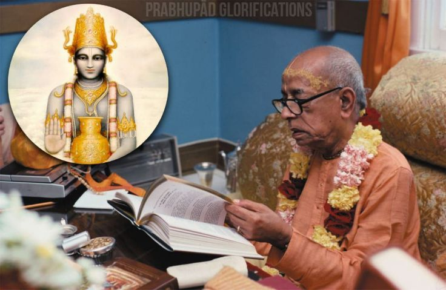

The Lord in His incarnation of Dhanvantari
Posted on : 29th October, 2024

धन्वन्तरिश्च भगवान् स्वयमेव कीर्ति- र्नाम्ना नृणां पुरुरुजां रुज आशु हन्ति ।
यज्ञे च भागममृतायुरवावरुन्ध आयुष्यवेदमनुशास्त्यवतीर्य लोके ॥ २१ ॥
The Lord in His incarnation of Dhanvantari very quickly cures the diseases of the ever-diseased living entities simply by His fame personified, and only because of Him do the demigods achieve long lives. Thus the Personality of Godhead becomes ever glorified. He also exacted a share from the sacrifices, and it is he only who inaugurated the medical science or the knowledge of medicine in the universe. (Srimad bhagvatam 2.7.21)
If Prabhupād would have not given this glorious gift of his divine books and commentaries, what would have happen!?, People like me would have rotten eternally in darkness of ignorance.On this auspicious day of advent of lord Dhanvantari ,let us pray to him and thank the greatest physician for the conditioned soul's disease, Sri srimad A.C Bhaktivedanta swami Srila Prabhupād.
~Admin